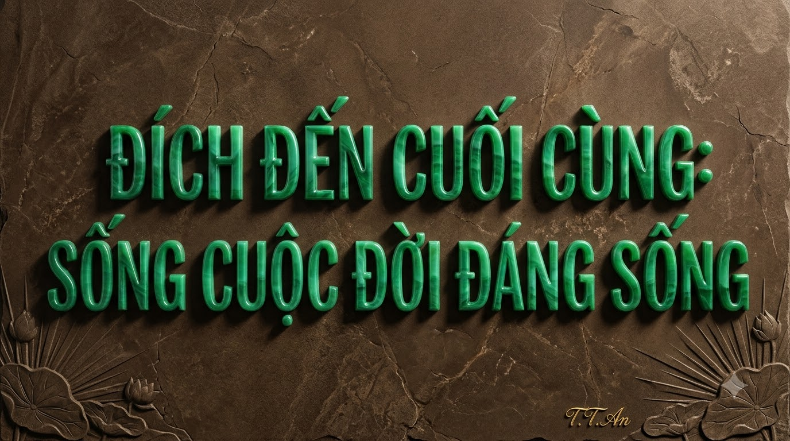

MỘT CUỐN SÁCH – NGÀN ĐIỀU KHÁM PHÁ
"Mỗi trang sách mở ra – Một chân trời tri thức."
Chào mừng bạn đến với Kho Báu Tri Thức – Một Đời Biết Ơn do Trịnh Thị An – An Nhiên AI — TTA sáng lập và xây dựng từ nguồn cảm hứng kho sách quý của Thầy Tuấn Tử Tế Từ Tâm (Người Thầy "5T"). Tại đây, mỗi cuốn sách là một không gian nghiên cứu tương tác có chiều sâu giúp bạn ứng dụng tri thức để thay đổi cuộc sống.
Trịnh Thị An
Thương hiệu: An Nhiên AI — TTA
- ✦ Tri thức được trao tặng: Tri ân món quà sách quý từ Thầy Tuấn Tử Tế Từ Tâm — Người Thầy "5T".
- ✦ Lòng biết ơn được lan tỏa: Biến sách hay thành bài phân tích, sơ đồ tư duy và hướng dẫn thực hành dễ hiểu.
- ✦ Phi thương mại & Tôn trọng bản quyền: Không phát tán file PDF có bản quyền, bảo vệ tuyệt đối kho nguồn riêng.
Kho Sách Nổi Bật Trong Thư Viện
Bạn Muốn Tìm Hiểu Điều Gì Hôm Nay?
Chọn một trong 10 nhóm tri thức dưới đây để lọc ngay những cuốn sách giúp giải quyết mục tiêu của bạn.
Tri Ân Thầy Tuấn Tử Tế Từ Tâm
✦ Người Thầy "5T": Tuấn – Tử – Tế – Từ – Tâm ✦
"TRI THỨC ĐƯỢC TRAO TẶNG – LÒNG BIẾT ƠN ĐƯỢC LAN TỎA – GIÁ TRỊ ĐƯỢC NHÂN LÊN."
Tác phẩm chữ nghệ thuật nguyên bản: "Biết ơn Thầy Tuấn Tử Tế Từ Tâm – Tăng Tương Tác – Tạo Tuyệt Tác" — Chữ ký T.T.An.
Trịnh Thị An – An Nhiên AI
Có những món quà khi trao đi không chỉ dừng lại ở người nhận, mà trở thành hạt giống nảy mầm thành cả một khu rừng tri thức. Kho sách quý do Thầy Tuấn Tử Tế Từ Tâm (Người Thầy "5T") trao tặng cho Trịnh Thị An chính là một món quà như thế.
Thư viện này được kiến tạo không nhằm mục đích thương mại, mà là lời tri ân sâu sắc nhất: đọc thật sâu, hiểu thật kỹ và biến tinh hoa trong từng trang sách thành những bài học ứng dụng giúp ích cho cộng đồng.
Bức Thư Viết Tay Tri Ân Thầy Tuấn Tử Tế Từ Tâm
Gửi Người Thầy Tôi Luôn Biết Ơn
Có những món quà quý giá không thể đo bằng vật chất.
Có những người thầy không chỉ trao kiến thức, mà còn mở ra cho học trò những chân trời mới.
Tôi may mắn được Thầy Tuấn Tử Tế Từ Tâm trao tặng một kho sách quý, chứa đựng biết bao kiến thức và những bài học sâu sắc.
Tôi hiểu rằng, giá trị của một cuốn sách không chỉ nằm ở những trang giấy, mà còn ở những điều tốt đẹp nó có thể khơi dậy trong tâm trí mỗi người.
Từ món quà ấy, tôi xây dựng thư viện này với mong muốn được học hỏi, khám phá và lan tỏa những giá trị tri thức đến cộng đồng.
Nếu hôm nay, khi bước vào thư viện này, bạn tìm thấy một điều bổ ích, một góc nhìn mới hay một bài học ý nghĩa, xin hãy cùng tôi dành một lời biết ơn đến Thầy Tuấn Tử Tế Từ Tâm.
Bởi có những món quà, càng được trân trọng và lan tỏa, càng trở nên vô giá.
Trân trọng và biết ơn!
Trịnh Thị An
An Nhiên AI (TTA) — T.T.An
Một Lần Kiến Tạo – Vạn Đời Nở Hoa
Hành trình xây dựng Thư Viện Tri Thức An Nhiên AI bắt đầu từ trăn trở của Trịnh Thị An: Làm sao để một cuốn sách quý từ kho sách của Thầy Tuấn Tử Tế Từ Tâm không chỉ nằm yên trong thư mục lưu trữ, mà trở thành người bạn đồng hành dễ hiểu, gần gũi với mọi lứa tuổi — kể cả các cô chú trung niên và người lớn tuổi?
- ✦ Chuyển hóa chiều sâu: Mỗi cuốn sách được mở ra thành 12 chiều khám phá, có tình huống thực tế và sơ đồ tư duy.
- ✦ Chuẩn mực & Bền vững: Kiến tạo một nền tảng tri thức số chuẩn mực để giá trị tốt đẹp tiếp tục lan tỏa mãi về sau.
 🔍 Nhấn để xem ảnh lớn nguyên bản
🔍 Nhấn để xem ảnh lớn nguyên bản
Tác phẩm nghệ thuật nguyên bản: "Một Lần Kiến Tạo – Vạn Đời Nở Hoa — An Nhiên AI".
Kho Báu Sách & Hồ Sơ Tri Thức
Không Gian Khám Phá Chuyên Sâu Từng Cuốn Sách
BẠN MUỐN KHÁM PHÁ ĐIỀU GÌ TỪ CUỐN SÁCH NÀY? (12 Chiều Sâu Tri Thức)
Nhấn vào từng nút bên dưới để đọc nội dung phân tích ngay tại chỗ🧠 Sơ Đồ Tư Duy Hệ Thống Hóa Cuốn Sách
🎨 Hình Minh Họa Chủ Đề Giáo Dục
BẠN ĐANG MUỐN TÌM CÂU TRẢ LỜI CHO VẤN ĐỀ GÌ?
Chọn một câu hỏi thực tế đã được biên soạn dưới đây hoặc nhập vấn đề của bạn để đối chiếu với dữ liệu xác thực của cuốn sách.
Tiêu Điểm Tuần Này: "Đời Ngắn Đừng Ngủ Dài" – Robin Sharma
Giữa nhịp sống hối hả, cuốn sách như một tách trà ấm buổi sớm mai nhắc chúng ta dừng lại để tự hỏi: "Mình đang thực sự sống sâu sắc hay chỉ đang vội vã đi qua ngày tháng?" Bài học thực tiễn lớn nhất cho tuần này là Thực hành lòng biết ơn và dành 20 phút tĩnh lặng mỗi sáng để đọc sách, nuôi dưỡng tâm hồn.
Lộ Trình Đọc Gợi Ý Cho Người Mới
- Tuần 1 (Thức tỉnh): Đời Ngắn Đừng Ngủ Dài
- Tuần 2 (Thân khỏe): Nhân Tố Enzyme
- Tuần 3 (Giao tiếp): Đắc Nhân Tâm & Trí Tuệ Xúc Cảm
- Tuần 4 (Sứ mệnh): Ba Người Thầy Vĩ Đại & Thói Quen Thứ 8

🔍 Nhấn để xem ảnh lớn nguyên bảnTác phẩm chữ ngọc bích điêu khắc nguyên bản: "Đích Đến Cuối Cùng: Sống Cuộc Đời Đáng Sống" — Chữ ký T.T.An.
Đích Đến Cuối Cùng: Sống Cuộc Đời Đáng Sống
Khi đi xuyên qua hàng trăm cuốn sách từ Đông sang Tây — từ Đời ngắn đừng ngủ dài, Ba người thầy vĩ đại, Thói quen thứ 8 cho đến Power vs. Force và Delivering Happiness — tất cả các bậc thức giả đều gặp nhau ở một giao điểm duy nhất:
"Đích đến cuối cùng của việc đọc sách và tu dưỡng không phải là tích lũy thật nhiều danh vọng, mà là sống một cuộc đời đáng sống: Thân khỏe mạnh, Tâm bình an, Trí sáng suốt và Đời có ích."
Ba trụ cột thực hành Triết lý sống An Nhiên: Sống Tỉnh Thức (Hiểu mình) – Sống Tử Tế (Thương người) – Sống Biết Ơn (Phụng sự cộng đồng).
Quy Trình 10 Bước Phân Tích Sách Bằng AI & Kiểm Duyệt Con Người
Phân biệt rõ giữa bài phân tích giáo dục độc lập với việc sao chép nguyên văn sách có bản quyền. Mọi bản thảo AI đều phải qua Bước 10 (Chủ thư viện Trịnh Thị An phê duyệt).
Góc Học Tập Cá Nhân, Khu Vực Thành Viên & Quản Trị Kho Sách
✎ Sổ Tay Ghi Chú & Thực Hành Sách
Đang hoạt độngCác ghi chú đã lưu của bạn:
★ Danh Sách Sách Cần Nghiên Cứu (Yêu Thích)
Cơ Chế Bảo Vệ Kho Sách Thầy Tuấn Tử Tế Từ Tâm & Phân Quyền Thành Viên
Tuân thủ nghiêm ngặt yêu cầu bảo mật tại Phần 11, 12 và 17: Website tuyệt đối không dùng nút đăng nhập giả hay lưu mật khẩu/API key/ID thư mục Google Drive trong mã nguồn HTML/JS công khai.
1. Tính năng đang hoạt động trực tiếp (Client-side):
✓ Khám phá công khai 12 mục phân tích, sơ đồ tư duy, bộ lọc, lưu ghi chú cá nhân, đánh dấu sách yêu thích và công cụ xuất/nhập JSON danh mục.
2. Tính năng cần cấu hình Backend khi mở rộng (Server-side):
⚙ Xác thực tài khoản thành viên (Supabase Auth / Firebase Auth), kiểm tra quyền truy cập từng tài liệu trên máy chủ (Row-Level Security) và Worker AI đọc PDF từ kho Drive riêng (có hướng dẫn chi tiết trong file tài liệu bàn giao).
🛠 Công Cụ Quản Trị: Bổ Sung Sách Mới & Xuất JSON
Giúp Chủ thư viện thêm đầu sách mới vào danh mục và xuất cấu trúc dữ liệu `books.json` mà không cần viết lại code HTML.
MỘT CHÚT NHẠC – MỘT TRANG SÁCH
Không gian âm nhạc tinh tế, ấm áp bổ trợ cho trải nghiệm đọc sách và chiêm nghiệm. Nhạc mặc định ở trạng thái nghỉ (không tự động phát) để tôn trọng sự tĩnh lặng của bạn.
Giai Điệu Tĩnh Tâm Đọc Sách
Danh Sách Giai Điệu Đọc Sách
* Bạn có thể bật giai điệu hòa tấu nhẹ nhàng ngay trên trang hoặc mở kênh YouTube An Nhiên AI Music (@annhienaimusictta) để thưởng thức trọn bộ các ca khúc trữ tình, chữa lành.
NHỮNG KHÔNG GIAN SỐ TÔI ĐÃ KIẾN TẠO
Giới thiệu các website và không gian văn hóa số do Trịnh Thị An – An Nhiên AI — TTA xây dựng (Không tạo đường dẫn giả; hỗ trợ Quản trị viên bổ sung dự án mới).
+ Bổ Sung Website Mới Vào Bộ Sưu Tập (Dành cho Quản trị viên)
🔍 Nhấn vào ảnh chân dung để xem kích thước lớn.
Trịnh Thị An – An Nhiên AI (TTA)
"Tôi là Trịnh Thị An, người sáng lập và xây dựng Kho Báu Tri Thức – Một Đời Biết Ơn (Thư Viện Tri Thức An Nhiên AI).
Được Thầy Tuấn Tử Tế Từ Tâm — người Thầy "5T" đáng kính — trao tặng một kho sách quý, tôi luôn tâm niệm rằng cách đẹp đẽ nhất để giữ gìn một món quà tri thức là đọc sâu, thực hành và biến những bài học trong sách thành không gian học tập hữu ích để lan tỏa tới cộng đồng.
Tôi mong rằng mỗi khi bạn ghé thăm thư viện này, bạn sẽ tìm thấy một ý tưởng sáng rõ cho công việc, một sự dịu dàng cho gia đình và một khoảng bình an cho tâm hồn."
Trịnh Thị An
An Nhiên AI — TTA
 🔍 Nhấn để xem ảnh lớn nguyên bản
🔍 Nhấn để xem ảnh lớn nguyên bản
Tác phẩm chữ thạch anh hồng nguyên bản: "Biết Ơn Vì Tất Cả!" — Chữ ký T.T.An.
Biết Ơn Vì Tất Cả!
Cảm ơn bạn đã dành thời gian quý báu bước vào Kho Báu Tri Thức – Một Đời Biết Ơn. Mỗi cuốn sách được mở ra, mỗi bài học được đem vào cuộc sống chính là lời tri ân đẹp đẽ nhất gửi tới Thầy Tuấn Tử Tế Từ Tâm — Người Thầy "5T".
Thương hiệu: An Nhiên AI — TTA
Người sáng lập & xây dựng: Trịnh Thị An
Nguồn cảm hứng: Kho sách quý do Thầy Tuấn Tử Tế Từ Tâm (Người Thầy "5T") trao tặng.